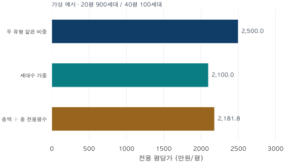

통계의 함정 · 3 / 4
한 거래, 한 세대, 한 평: 가중치가 바꾸는 아파트 가격
세대수 가중 평균과 면적 가중 평당가의 차이를 계산합니다. 프로젝트의 전용면적·재고 변수로 지역 가격 수준과 추정 주택자산 총액을 구분합니다.
분석 기간 · 가상 재고 예시 · 집계 개념 | 보유 자료 스냅샷 생성 · 2026-10-04
한 달에 열 번 거래된 소형 주택과 한 번 거래된 대형 주택이 있습니다. 거래시장을 요약한다면 열 번과 한 번을 세면 됩니다. 그런데 동네에 존재하는 집 전체를 대표하려면 어떨까요? 이번에는 거래 기록이 아니라 세대수와 면적이 필요합니다.
1. 거래 비중과 재고 비중은 다릅니다
세대수 가중 평균을 먼저 간단하게 써봅시다. 가격이 Pj인 주택 유형 j가 Hj세대 존재한다면, 그 유형의 집을 세대수만큼 펼쳐 놓고 평균을 구하는 것과 같습니다.
세대수 가중 평균가격 = Σ(HjPj) ÷ ΣHj
H는 거래 건수가 아니라 해당 유형의 세대수입니다.
한 단지에 전용 20평·4억 원 유형이 900세대, 전용 40평·12억 원 유형이 100세대 있다고 합시다. 각 유형의 모든 집에 같은 가격을 적용할 수 있다고 가정합니다.
유형 두 개에 같은 비중을 주면 평균가격은 8억 원입니다. 세대수로 가중하면 (900×4+100×12)/1,000 = 4.8억 원입니다. 그달에 각 유형이 몇 번 거래됐는지는 이 계산에 들어가지 않습니다.
전형적인 보유 주택의 가격 수준이나 전체 재고의 가격 분포를 요약하고 싶을 때 세대수 가중이 필요합니다. 거래가 활발한 유형에 자동으로 더 큰 표를 주지 않기 때문입니다. 반대로 “이번 달 매수자들이 체결한 거래의 평균금액”이 질문이라면 거래 건수 가중이 맞습니다. 세대수 가중이 언제나 더 정확한 평균이라는 뜻은 아닙니다.
단지 간 비교도 같습니다. 평균가격 12억 원인 100세대 단지와 4억 원인 900세대 단지를 같은 비중으로 평균하면 8억 원, 모든 세대를 같은 비중으로 보면 4.8억 원입니다. 앞의 유형별 예시와 계산은 같지만, 한 행의 단위가 ‘주택 유형’에서 ‘단지’로 바뀌었습니다.
2. ‘평당가’라는 같은 이름 아래 다른 분모가 있습니다
집 i의 가격을 Pi, 전용면적을 평 단위로 Ai, 평당가를 qi=Pi/Ai라고 하겠습니다. 모든 세대를 한 줄씩 펼쳤을 때 다음 두 식을 구분해야 합니다.
세대별 평당가의 평균 = Σqi ÷ 세대 수
총가격 ÷ 총면적 = ΣPi ÷ ΣAi = Σ(Aiqi) ÷ ΣAi
두 번째는 평당가에 면적을 가중한 평균입니다. 큰 집은 더 많은 평을 가지고 있으므로 더 큰 비중을 갖습니다. 거래 자료로 같은 식을 계산하면 그 기간에 거래된 면적 기준의 값이고, 전체 재고에 적용하면 재고 면적 기준의 값입니다. 먼저 모집단을 정해야 합니다.
위 가상 단지의 소형은 2,000만원/평, 대형은 3,000만원/평입니다. 유형을 같은 비중으로 보면 2,500만원/평이고, 세대수 가중은 2,100만원/평입니다. 총가격은 4,800억 원, 총면적은 22,000평이므로 총가격÷총면적은 약 2,181.8만원/평입니다.

가상 교육 예시 · 전용 20평 900세대와 40평 100세대 · seaborn. 4,800억 원을 계산할 때 만원 단위로 환산했습니다.
세대수 가중 평균가격 4.8억 원을 세대수 가중 평균면적 22평으로 나누어도 2,181.8만원/평이 됩니다. 이것은 ‘세대별 평당가의 평균’ 2,100만원/평과 다릅니다. 나눗셈을 한 뒤 평균하는 것과 평균한 뒤 나누는 것은 일반적으로 교환되지 않습니다. 각 세대의 면적이 모두 같을 때는 두 평당가가 일치합니다.
3. 실제 프로젝트에서는 표준 면적과 실측 재고를 구분합니다
실거래 자료에서 개별 전용 평당가는 price_manwon / (area_m2 / 3.3058)로 계산합니다. 원자료의 거래금액은 dealAmount, 전용면적은 excluUseAr입니다. 공급면적을 분모로 한 평당가와 직접 비교하면 안 됩니다. 이 자료만으로 세대별 공급면적을 만들어내지 않습니다.
모형에서는 단지와 전용 정수 평형 unit_type별로 추정가격 benchmark_amount를 갖습니다. 예를 들어 전용 25평 기준 주택의 가격 B라면, 모형 평당가 b는 B/25입니다. 평형군 전체를 하나의 25평 주택으로 대신하지 않고 각 구성 평형의 가격과 세대수를 먼저 맞춥니다.
| 표시할 값 | 계산 | 답하는 질문 |
|---|---|---|
| 세대수 가중 추정가격 | Σ(B×N) / ΣN | 구성 전용 평형별 표준주택 가격의 세대수 평균 |
| 세대수 가중 전용 평당가 | Σ(b×N) / ΣN | 한 세대씩 같은 비중을 준 단위면적 가격 |
| 추정 주택자산 총액 | Σ[b×(a/3.3058)×H] | 실측 전용면적 a㎡와 해당 세대수 H에 맞춘 가격의 합 |
N은 전용 정수 평형에 속한 실측 면적별 세대수의 합입니다. 자산 총액에서는 실측 전용면적 a를 사용하기 때문에, 정수 평형 기준 가격 B에 총세대수만 곱한 결과와 반드시 같지 않습니다. 구현의 area_households와 mean_stock_area_m2가 이 연결을 담습니다. 단지나 평형군 요약에 쓰는 집계용 키를 실제 면적으로 착각해 가격을 나누어서는 안 됩니다.
또한 프로젝트의 세대수는 원자료 행 수가 아닙니다. 건축물대장 표제부는 건물 동 단위이므로 동일 건물의 중복을 제거해야 하고, 한 주소에 여러 거래 단지가 얽히면 세대수 귀속이 불명확할 수 있습니다. 가격을 비교하는 complex_id와 주소 단위 address_id의 관계를 확인한 재고만 가중치로 사용합니다.
4. 비싼 지역, 큰 시장, 빨리 오른 지역은 서로 다릅니다
지역 간 위계를 하나의 순위로 만들면 서로 다른 질문이 섞입니다. 평당가는 면적당 가격의 수준, 추정 주택자산 총액은 가격과 재고가 결합된 규모, 상승률은 두 시점 사이의 변화를 나타냅니다.
A지역은 전용 20평·5,000만원/평 주택이 100세대, B지역은 전용 20평·2,000만원/평 주택이 1,000세대라고 합시다. A는 평당가가 더 높지만 추정 총액은 1,000억 원, B는 4,000억 원으로 B가 더 큽니다. 다음 기간 A가 2%, B가 10% 상승했다면 변화 속도도 B가 더 빠릅니다. 높은 평당가만으로 규모나 상승률을 알 수 없습니다.
구→법정동→단지 비교에서도 같은 포함 대상과 기준일을 써야 합니다. 하위 집단이 겹치지 않고 빠짐없이 포괄하면 금액 합과 세대수는 합산할 수 있습니다. 하지만 법정동 평당가를 단순 평균한 값을 구의 세대수 가중 평당가라고 부르면 가중치가 바뀝니다. 어느 지역이 “상위”인지 말하려면 어떤 지표의 순위인지 먼저 붙이세요.
5. 가중치가 없는 집은 가격 0원이 아닙니다
아파트 1,000세대 가운데 800세대의 가격과 면적만 연결됐다면, 계산 가능한 합산액은 가격을 확인한 800세대의 부분 합입니다. 남은 200세대를 가격 0원으로 넣어서는 안 됩니다. 알고 있는 재고가 1,000세대라면 세대수 기준 커버리지는 80%이며, 세대수 자체를 모르는 단지는 별도로 표시해야 합니다.
이 프로젝트의 지역 화면도 ‘추정 합산액 · 가격 확인 재고’를 표시합니다. 단지 전체 합계로 말하려면 모든 양의 세대수 구성요소의 가격이 필요합니다. 지원되는 부분만 합산한 지역 값은 전체 자산을 빠짐없이 조사한 확정 총액이 아닙니다.
과거 비교에도 주의가 필요합니다. 현재 확인한 세대수 구성을 과거 추정가격에 적용하면 “현재 재고를 과거 가격으로 평가한 값”이 됩니다. 과거 당시 실제로 존재했던 재고와 부를 완전히 복원한 값이 아닙니다. 프로젝트는 알려진 건축연도 이전 재고를 제외하지만, 그것만으로 역사적 재고가 복원되는 것은 아닙니다.
연습 · 유형별 평균과 세대 평균이 같아지는 경우
앞의 20평·4억 원과 40평·12억 원 유형이 각각 500세대라면 평균가격은 8억 원, 세대수 가중 평당가는 2,500만 원입니다. 하지만 총액÷총면적은 약 2,666.7만원/평입니다. 세대수가 같으면 유형 동일 가중과 세대수 가중은 같아져도, 면적 가중까지 같아지지는 않습니다.
가중치를 선택하는 일은 기술적인 마무리가 아닙니다. 우리가 대표하려는 대상이 거래인지, 주택 재고인지, 면적인지를 결정하는 통계 설계의 핵심입니다.
분석 방법·출처·재현 자료
실제 집계의 범위
국토교통부 아파트 매매 실거래가 상세 자료 중 노원구·강서구, 2026년 5~6월 계약, 전용 17·18평형과 25·26평형을 사용했습니다. 전용면적㎡를 3.3058로 나누고 0.5 이상을 올린 정수 평형을 묶습니다. 두 평형군 외 거래는 포함하지 않습니다. 식별된 취소·직거래, 토지임대부와 정제상 부적격 관측은 제외합니다. 미확인 상태를 모두 확인했다는 뜻은 아닙니다.
2026년 9월 계약분까지 보유한 자료로 10월 4일 생성한 스냅샷을 재사용했습니다. 원래 정보 입수 시점은 복원하지 못했으며 이후 신고·정정에 따라 값은 달라질 수 있습니다. 두 지역은 비교 방법을 설명하기 위해 선택한 사례이고 전국을 대표하는 표본이 아닙니다.
검증과 그림
지역×월×평형군 8개 셀과 두 평형군 합산 4개 셀의 건수·평균·중앙값을 조회 관측과 정제 거래에서 각각 계산해 대조했습니다. 모든 공개 셀은 10건 이상이며, 이는 공개 최소 건수 조건이지 정확도를 보증하는 임계값이 아닙니다. 전체 중앙값은 개별 거래를 합쳐 계산한 값입니다. 변화율과 가중 평균은 반올림 전 값으로 계산합니다.
그래프는 검증된 공개 집계와 명시된 가상 예시만으로 seaborn에서 작성했습니다. 집계값에 임의로 거래 분포나 신뢰구간을 덧붙이지 않았습니다. 실제 집계와 모집단 정의 내려받기 (JSON). 그림의 가상 재고 예시는 실제 단지나 지역을 나타내지 않습니다.
개념의 근거
평균·중앙값의 일반 정의는 NIST 통계 핸드북의 위치 통계량 설명을 참고할 수 있습니다. 세대수·면적 가중과 지역 총액은 파파펭귄 프로젝트의 재고 집계 정의를 따르며, 수식과 포함 범위는 본문에 공개했습니다. 외부 기관의 가격지수를 재현한 글은 아닙니다.
분석·집필: 파파펭귄 (Nobot Kang). 에이전트를 활용해 계산 검증, 초안과 그림을 작성했습니다. 개별 거래나 단지 식별자는 공개하지 않습니다. 공공데이터포털은 원자료의 이용허락범위를 제한 없음으로 안내합니다(2026-10-08 확인). 글·그림의 이용 조건과 원자료 조건은 별개입니다.